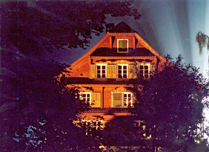

Le cas d'esprit frappeur le plus documenté
.
Dans les années 1850s, Melchior Joller, avocat, est un des membres dirigeants du Conseiller National de Suisse (la chambre basse du Parlement fédéral). Il fonde un journal libéral et oeuvre à l'abolition de la peine de mort dans le canton. De caractère méthodique et obstiné, c'est un rationaliste luttant contre toute superstition.
En il vit à Stans, chef-lieu du demi-canton de Nidwald (Suisse), dans une grande maison non loin du du Lac Lucerne (à 30 km), avec sa femme Caroline, leurs 4 fils Robert, Edward, Oscar et Alfred, et leurs 3 filles Emaline, Melanie et Henrika, ainsi que leurs domestiques.
A l'Automne, une des bonnes raconte avoir entendu la nuit des coups sur les bois de son lit. Quelques semaines plus tard la femme de Joller et sa fille, partageant la même chambre à coucher, sont réveillées par des bruits de coups. A cette époque Joller ne prêê trop attention à ces histoires.
Près d'un an passe sans autre manifestation, jusqu'en Juin 1861, où Oscar, l'un des fils de Joller, n'est pas présent
au souper. On le cherche dans la maison, et finit par le trouver inconscient dans la remise à bois. Revenu à lui, il
raconte à sa famille qu'il était en train de chercher l'origine de coups qu'il avait entendu, quand soudain la porte
derrière lui s'était ouverte, et qu'une forme blanchâtre était entrée
. Dans les jours qui suivent, les autres
enfants disent aussi entendre des coups. Henrika raconte qu'un petit enfant lui est apparu.
A l'Automne qui suit une autre bonne déclare avoir vu des formes grises
et qu'une nuit quelqu'un avait
monté l'escalier dans la maison, était passé dans le salon à l'étage, et avait marché juste après elle. La même
boêacute;clara avoir entendu appeler son nom plusieurs fois. Une fois alors qu'elle était dans le salon elle entendit
des pleurs très perturbants
. Joller ne prêta pas ou pêntin à cette bonne. La considérant superstitieuse, il la
renvoie, et engage à sa place une fille de 13 ans.
Les choses se calment, jusqu'à l'Eté . Le , Joller, sa femme et son fils
Robert se rendent à Lucerne à 7 h du matin, laissant les autres membres de la famille et la jeune servante à la
maison. Henrika entend des bruits de coups secs et en avertit Melanie (alors 14 ans) et la servante. Elle court alors
voir dans le couloir d'où elle suppose que les bruits proviennent, et crie Au nom de Dieu, s'il y a quelque chose,
qu'il vienne et frappe.
Comme une réponse à sa demande, des bruits de coups se font entendre. Oscar arrive alors
on lui raconte ce qui s'est passé. Il crie à son tour la même chose que sa sêis cette fois-ci aucune réponse n'arrive.
Edward essaie à son tour. Tous prennent peur, et fuient la maison. Alors qu'ils sont assis dehors sur les marches de
pierre froide, une pierre de la taille du poing tombe entre Melanie et Alfred. Arrive le moment du déjeûner et ils
décident de retourner dans la maison. A l'intérieur, ils trouvent les portes de toutes les pièces ouvertes. Ils les
referment, les verrouillant chaque fois que possible. Mais elles sont réouvertes à nouveau, y compris celles
verrouillées. Les enfants entendent alors le son de pas lourds, et fuient la maison une nouvelle fois. Alors que la
jeune servante jette un oeil en arrière à ce moment, elle dit avoir vu une forme, comme une feuille de papier pendue
par un coin, venir vers elle. Lorsqu'elle crie la figure disparaît. Les enfants finissent, en définitive, par se
réfugier dans une grange où travaillent des ouvriers. Les font quelques escapades près de la maison afin de voir ce
qu'il se passe.
Ainsi inteviennent des sons, des objets bougeant, et une voix parlant de manière très mélancolique, même si
personne n'êour
(sic). On voit une tête de mort se former sur le sême si on l'avait versé), mais elle disparaît
rapidement. Plus tard dans la soirée on voit une lumière descendre de la cheminée. Lorsque la bonne regarde en haut
pour voir de quoi il s'agit, elle voit une objet ayant d'innombrables petites flammes bleues
qui aurait explosé
au plus profond de la cheminée, éteint avec de l'eau.
De façon suprenante, à cette époque Joller lui-même ne croit toujours pas àêstoires qu'on lui raconte. C'est le Mardi 19 Août qu'il va lui-même entendre des coups secs, semblant êe;péter les coups qu'il produit volontairement pour voir. Il promet alors à sa famille que ces événements vont faire l'objet d'une enquête. Les jours suivants Joller voit la porte entêhambre à coucher et la cuisine se tordre lorsqu'il entend à nouveau les bruits frappés. Il soulève le verrou de la porte et celle-ci souvre violemment, lui faisant voir une forme sombre mais qu'il ne peut exactement déterminer, qui part rapidement vers la cheminée. Joller va l'examiner mais ne trouve rien.
Le jour suivant Joller voit les portes frapper et s'ouvrir avec une grande aussi puissante que ce qu'un maillet de
bois pourrait faire lorsqu'il est balancé avec toute la force d'un bras puissant
.
L'affaire devient le sujet des discuêlocales et d'autres personnes déclarent maintenant entendre aussi les bruits. Suite à une telle ampleur publique, une "commision tripartite" est nommée pour enquêter. Les Joller sont déménagés penêelques jours (moins d'une semaine) et il aucun phénomène n'est constaté dans la maison pendant cette période. On trouve trace des conclusions de cette commission dans des archives publiques (les conclusions détaillées ayant été rendues oralement à l'époque). En fait il semble probable que les membres de la commission n'aient pas habité la maison durant cette enquête, mais aient plutôt demandé à un gendarê(ou plutôt un garde-champêtre) de le faire, ou de passer de temps en temps dans la maisoêdémarche qui, s'il elle était avérée, paraît peu probante.
Dans la cuisine Joller découvre que des bouteilles, des verres et d'autres récipients ont été attaqués, portant la trace de heurts comme par un instrument de métal. Des bruits proviennent aussi de différents endroits de la maison en une succession si rapide qu'il faudrait 4 ou 5 personnes pour les produire.
La nuit du 23 Août dans une chambre à coucher du 1er étage, Joller, sa femme et une servante se sentent tous touchés à la tête, comme par une main. Joller et sa femme cherchent à attraper laêt la sentent chaude et petite comme celle d'un enfant.
Le 16 Septembre Joller voit une pomme reinette descendre les escaliers, rouler dans le couloir et dans la cuisine. Après avoir été récupérée et posée sur la table de la cuisine elle part à nouveau dans le couloir. La servante la jette alors par la fenêtre, mais un instant plus tard elle revient comme rejettée sur la table de lêne.
Le 6 Octobre 5 personnes déclarent avoir vu une figure par 4 fois. Elle est décrite comme une femme mélancolique avec une tête "cintrée", semblable à celle que Melanie a décrit le 10êbre.
C'est ce mois d'Octobre que Joller et sa famille décident finalement de quitter la maison pour Zürich. Durant ce qu'il nomme la "nuit de la révélation", ses cheveux blanchissent entièrement. Le lendemain, il déclare à son entourage médusé : "J'ai tout compris !". En 1863, à Rome, Joller publie Phénomènes mystiques vécus, reprenant ses notes.
Emaline, contactée dans les années 1930s, dira que les phénomènes ne les avaient pas suivis dans leur nouvelle demeure. Elle racontera comment son père mouru en 1865 à Rome, contraint à vivre en exil dans la pauvreté après avoir été ridiculisé et attaqué aussi bien par sa famille que ses amis de Suisse.
En 2003 un documentaire est réalisé sur le sujet par une equipe allemande. Arrivés sur le terrain et apprenant que la maison doit être détruite, ils convaiquent le propriétaire de leur laisser une semaine pouêute;aliser leur reportage. L'accord donné, ils investissent la maison pour une semaine.
L'équipe commence par poser des caméras infrarouges et classiques à des endroits strategiques de la maison. Elle va vivre des événements mineurs mais qui la perturberont :
L'équipe donnera la parole à des "experts" invités à la maison :
Le plus intéressant et le plus frustrant réside dans la fin du reportage, où l'on apprend que Melchior, après son départ de la maison pour Rome, aurait eu une révélation (ses cheveux devenant blancs en un jour) et écrit un autre livre donnant l'explication des ces phénomènes. Le livre porterait une inscription en latin ordonnant que l'ouvrage reste dans la famille de Joller. L'équipe finit par en retrouver la trace dans la famille de Joller à Rome, où elle retrouve accroché le portrait de la grand-mère de Melchior.
Le film se conclut sur l'hypothèse (appuyée par la famille de Joller) que les phénomènes pourraient être le fait de la grand-mère de Melchior (alors défunte et supposément esprit frappeuse à l'époque des faits), qui aurait voulu donner une leçon à un petit-fils trop rationnel à son goût. La famille promet de montrer le second livre à l'équipe de tournage mais demande 2 mois avant pour "mettre leurs affaires en ordre". Le film se termine ainsi, sans savoir le fin mot de l'affaire. Y'aura-t-il une suite ?
Références